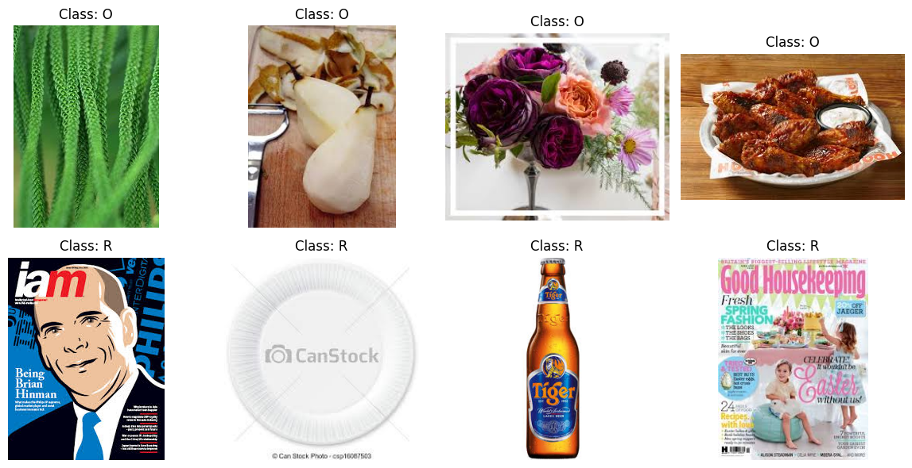

Using Colab cache for faster access to the 'waste-classification-data' dataset.
Dataset downloaded to:
/kaggle/input/waste-classification-data
3. Locate and inspect the image folders
The dataset normally contains separate TRAIN and TEST folders. The following code searches for them automatically and counts the actual image files instead of relying only on the dataset metadata.
IMAGE_EXTENSIONS = {'.jpg', '.jpeg', '.png', '.bmp', '.gif', '.webp'}def count_images(folder: Path) ->int:returnsum(1for file_path in folder.rglob('*')if file_path.is_file() and file_path.suffix.lower() in IMAGE_EXTENSIONS )def has_class_folders(folder: Path) ->bool: child_dirs = [path for path in folder.iterdir() if path.is_dir()] valid_children = [path for path in child_dirs if count_images(path) >0]returnlen(valid_children) >=2all_dirs = [path for path in dataset_path.rglob('*') if path.is_dir()]train_candidates = [ path for path in all_dirsif path.name.upper() =='TRAIN'and has_class_folders(path)]test_candidates = [ path for path in all_dirsif path.name.upper() =='TEST'and has_class_folders(path)]ifnot train_candidates ornot test_candidates:raiseFileNotFoundError('Could not locate valid TRAIN and TEST directories. ''Inspect dataset_path and set TRAIN_DIR and TEST_DIR manually.' )TRAIN_DIR =max(train_candidates, key=count_images)TEST_DIR =max(test_candidates, key=count_images)print('TRAIN_DIR:', TRAIN_DIR)print('TEST_DIR :', TEST_DIR)print('Training images:', count_images(TRAIN_DIR))print('Test images :', count_images(TEST_DIR))
TRAIN_DIR: /kaggle/input/waste-classification-data/DATASET/TRAIN
TEST_DIR : /kaggle/input/waste-classification-data/DATASET/TEST
Training images: 22564
Test images : 2513
for split_dir in [TRAIN_DIR, TEST_DIR]:print(f'\n{split_dir.name}/')for class_dir insorted(path for path in split_dir.iterdir() if path.is_dir()):print(f' {class_dir.name}/ ({count_images(class_dir)} images)')
Inspect examples before training to verify image readability, class labels, lighting, scale, viewpoint, and background diversity.
from PIL import Imageclass_dirs =sorted(path for path in TRAIN_DIR.iterdir() if path.is_dir())plt.figure(figsize=(12, 6))plot_index =1for class_dir in class_dirs: image_files = [ path for path in class_dir.rglob('*')if path.is_file() and path.suffix.lower() in IMAGE_EXTENSIONS ] selected_files = random.sample(image_files, k=min(4, len(image_files)))for image_path in selected_files:with Image.open(image_path) as image: image = image.convert('RGB') ax = plt.subplot(len(class_dirs), 4, plot_index) ax.imshow(image) ax.set_title(f'Class: {class_dir.name}') ax.axis('off') plot_index +=1plt.tight_layout()plt.show()

5. Create TensorFlow datasets
The original TRAIN folder is split into 80% training and 20% validation data.
The original TEST folder is used only for final evaluation.
label_mode='binary' is used because there are two classes.
Test shuffling is disabled to keep labels aligned with predictions.
Found 22564 files belonging to 2 classes.
Using 18052 files for training.
Found 22564 files belonging to 2 classes.
Using 4512 files for validation.
Found 2513 files belonging to 2 classes.
Class order: ['O', 'R']
Display names: ['Organic', 'Recyclable']
Image batch shape: (32, 128, 128, 3)
Label batch shape: (32, 1)
Pixel range: 0.0 to 255.0
6. Data augmentation and input performance
The augmentation pipeline applies horizontal flipping, small rotation, zoom, translation, and contrast changes. Augmentation is active only during training.
The model contains data augmentation, pixel rescaling, convolutional blocks, batch normalization, max pooling, dropout, global average pooling, and a sigmoid classifier.
Each convolutional block adds three techniques that typically improve a from-scratch CNN:
Residual (skip) connections: a 1x1 projection shortcut is added back to the block output before the final activation, which eases gradient flow and lets deeper stacks train reliably.
Squeeze-and-Excitation (SE) attention: a lightweight channel-attention gate that reweights feature maps by their global importance instead of treating every channel equally.
L2 weight regularization on convolutional and dense kernels, combined with dropout that increases with depth (later blocks, which have more parameters, are regularized more strongly).
def se_block(x, reduction=8, name_prefix="se"):"""Squeeze-and-Excitation channel attention gate.""" channels = x.shape[-1] se = layers.GlobalAveragePooling2D(name=f"{name_prefix}_pool")(x) se = layers.Dense(max(channels // reduction, 8), activation="relu", name=f"{name_prefix}_reduce" )(se) se = layers.Dense(channels, activation="sigmoid", name=f"{name_prefix}_expand")(se) se = layers.Reshape((1, 1, channels), name=f"{name_prefix}_reshape")(se)return layers.Multiply(name=f"{name_prefix}_scale")([x, se])def conv_bn_relu(x, filters, name, l2_reg): x = layers.Conv2D( filters, 3, padding="same", use_bias=False, kernel_regularizer=keras.regularizers.l2(l2_reg), name=f"{name}_conv", )(x) x = layers.BatchNormalization(name=f"{name}_bn")(x) x = layers.Activation("relu", name=f"{name}_relu")(x)return xdef build_cnn( image_size=IMG_SIZE, base_filters=32, num_blocks=3, dense_units=128, dropout_rate=0.35, l2_reg=1e-4,): inputs = keras.Input(shape=(*image_size, 3), name='input_image') x = data_augmentation(inputs) x = layers.Rescaling(1.0/255.0, name='rescaling')(x) filters = base_filtersfor block_index inrange(num_blocks): block_name =f'block_{block_index +1}'# 1x1 projection shortcut so the residual add matches the block's output channels shortcut = layers.Conv2D( filters, 1, padding='same', use_bias=False, kernel_regularizer=keras.regularizers.l2(l2_reg), name=f'{block_name}_shortcut_conv', )(x) shortcut = layers.BatchNormalization(name=f'{block_name}_shortcut_bn')(shortcut) x = conv_bn_relu(x, filters, f'{block_name}_1', l2_reg) x = conv_bn_relu(x, filters, f'{block_name}_2', l2_reg) x = se_block(x, name_prefix=f'{block_name}_se') x = layers.Add(name=f'{block_name}_residual_add')([x, shortcut]) x = layers.Activation('relu', name=f'{block_name}_out_relu')(x) x = layers.MaxPooling2D(2, name=f'{block_name}_max_pool')(x) block_dropout = dropout_rate * (block_index +1) / num_blocks /2 x = layers.Dropout(block_dropout, name=f'{block_name}_dropout')(x) filters *=2 x = layers.GlobalAveragePooling2D(name='global_average_pooling')(x) x = layers.Dense( dense_units, activation='relu', kernel_regularizer=keras.regularizers.l2(l2_reg), name='dense_features', )(x) x = layers.Dropout(dropout_rate, name='classifier_dropout')(x) outputs = layers.Dense(1, activation='sigmoid', name='waste_probability')(x)return keras.Model(inputs, outputs, name='waste_cnn')model = build_cnn()model.summary()
8. Compile the model
Binary cross-entropy is used for training, Adam is used for optimization, and the initial learning rate is 0.001.
class F1Score(keras.metrics.Metric):"""Binary F1 score, computed from Precision and Recall at a fixed threshold."""def__init__(self, name='f1', threshold=0.5, **kwargs):super().__init__(name=name, **kwargs)self.precision = keras.metrics.Precision(thresholds=threshold)self.recall = keras.metrics.Recall(thresholds=threshold)def update_state(self, y_true, y_pred, sample_weight=None):self.precision.update_state(y_true, y_pred, sample_weight)self.recall.update_state(y_true, y_pred, sample_weight)def result(self): precision =self.precision.result() recall =self.recall.result()return2* precision * recall / (precision + recall + keras.backend.epsilon())def reset_state(self):self.precision.reset_state()self.recall.reset_state()LEARNING_RATE =1e-3model.compile( optimizer=keras.optimizers.Adam(learning_rate=LEARNING_RATE), loss=keras.losses.BinaryCrossentropy(), metrics=[ keras.metrics.BinaryAccuracy(name='accuracy'), keras.metrics.Precision(name='precision'), keras.metrics.Recall(name='recall'), keras.metrics.AUC(name='auc'), F1Score(name='f1'), ],)
9. Train the CNN
Callbacks stop training when validation loss no longer improves, reduce the learning rate on a plateau, and save the best model.
EPOCHS =25BEST_MODEL_PATH ='/content/best_waste_cnn.keras'# Class weights correct for imbalance between the two folders so the# minority class isn't under-represented in the loss (and hurts F1 less).train_counts = ( count_df[count_df['split'] =='TRAIN'] .set_index('folder_label')['image_count'])total_images = train_counts.sum()class_weight = { class_index: total_images / (len(CLASS_NAMES) * train_counts[class_name])for class_index, class_name inenumerate(CLASS_NAMES)}print('Class weights:', class_weight)callbacks = [ keras.callbacks.EarlyStopping( monitor='val_f1', mode='max', patience=5, restore_best_weights=True, verbose=1 ), keras.callbacks.ReduceLROnPlateau( monitor='val_f1', mode='max', factor=0.5, patience=2, min_lr=1e-6, verbose=1 ), keras.callbacks.ModelCheckpoint( BEST_MODEL_PATH, monitor='val_f1', mode='max', save_best_only=True, verbose=1 ),]history = model.fit( train_ds, validation_data=val_ds, epochs=EPOCHS, class_weight=class_weight, callbacks=callbacks,)
10. Plot learning curves
Use the curves to identify underfitting, overfitting, and optimization instability.
The classification threshold is tuned on the validation set to maximize F1 (instead of a fixed 0.5), then applied unchanged to the held-out test set.
# Tune the decision threshold on validation data to maximize F1, then# apply that fixed threshold to the held-out test set (never tune on test).y_val_true = np.concatenate( [labels.numpy().reshape(-1) for _, labels in val_ds], axis=0).astype(int)y_val_probability = model.predict(val_ds, verbose=0).reshape(-1)precisions, recalls, thresholds = precision_recall_curve(y_val_true, y_val_probability)f1_per_threshold =2* precisions * recalls / (precisions + recalls +1e-9)best_index = np.argmax(f1_per_threshold[:-1]) # last point has no matching thresholdBEST_THRESHOLD =float(thresholds[best_index])print(f'Best threshold (max F1 on validation): {BEST_THRESHOLD:.3f} (val F1 = {f1_per_threshold[best_index]:.4f})')y_true = np.concatenate( [labels.numpy().reshape(-1) for _, labels in test_ds], axis=0).astype(int)y_probability = model.predict(test_ds, verbose=1).reshape(-1)y_pred = (y_probability >= BEST_THRESHOLD).astype(int)print(classification_report( y_true, y_pred, target_names=DISPLAY_NAMES, digits=4,))print(f'Test F1 (macro): {f1_score(y_true, y_pred, average="macro"):.4f}')